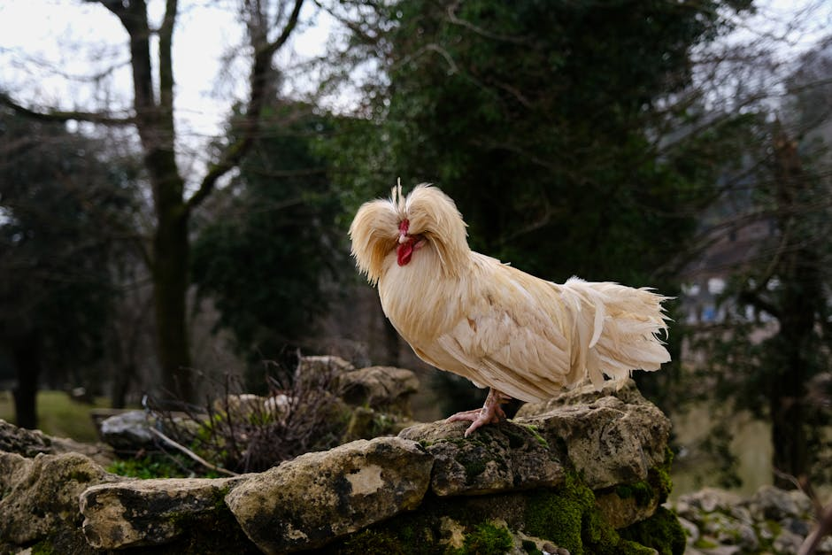
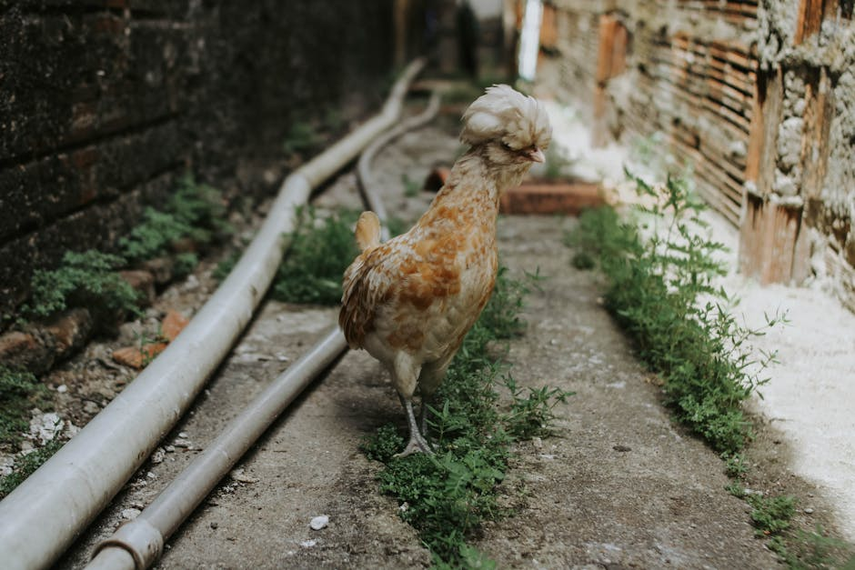
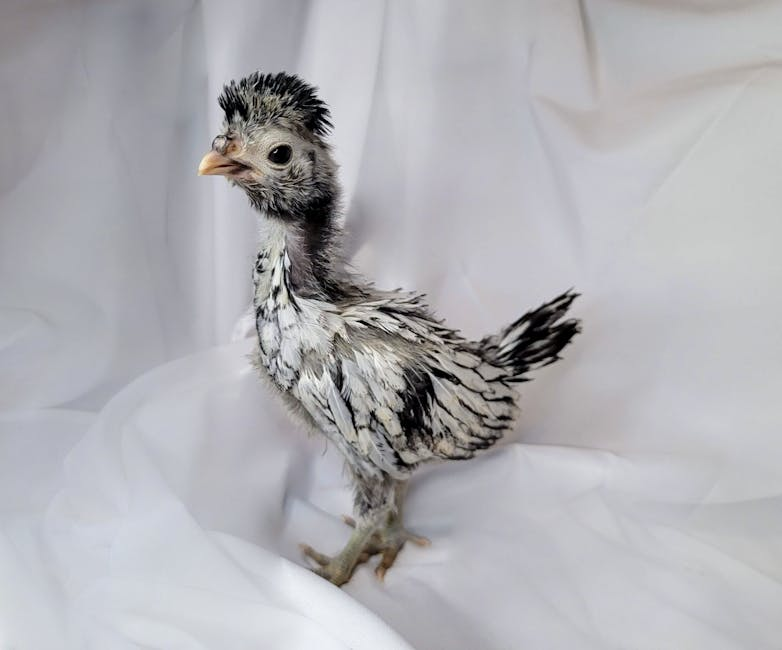
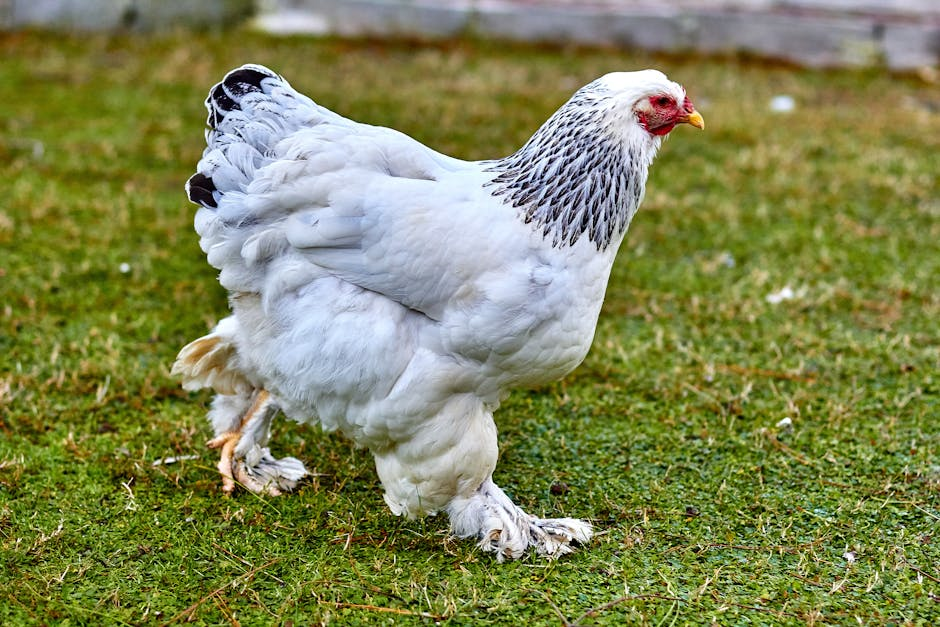
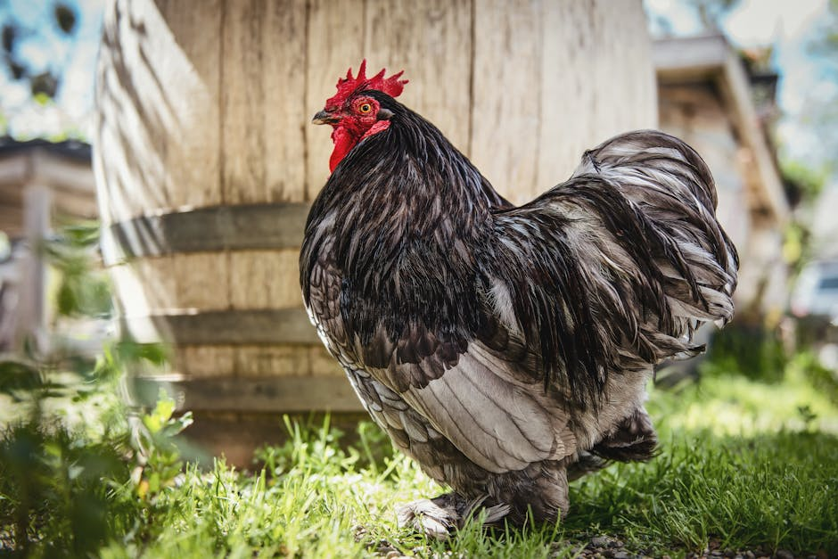
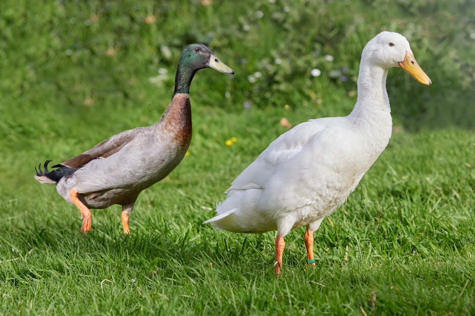
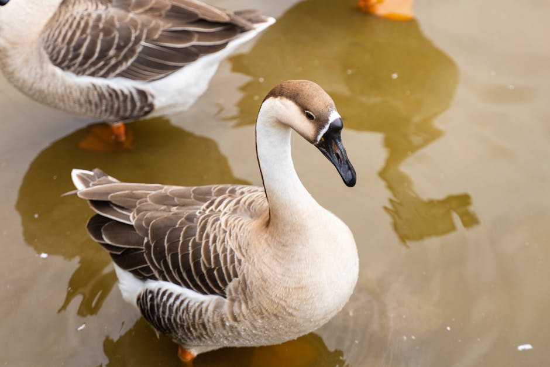
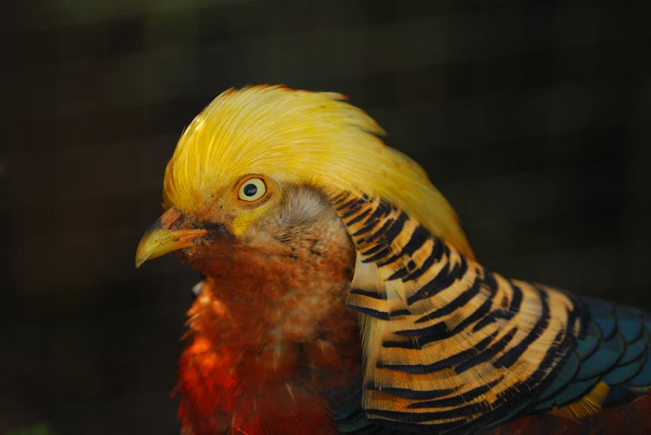

Početna · Kategorije · Živinarstvo
Živinarstvo
Rasne kokoške, patuljaste varijante, patke, guske i fazani. Pored proizvodnih, izložbene rase imaju izričite standarde — boja, oblik perja, postavka tela i karakter.
Rasne kokoške, patuljaste varijante, patke, guske i fazani. Pored proizvodnih, izložbene rase imaju izričite standarde — boja, oblik perja, postavka tela i karakter.

Baza rasa · 8 priznatih

Kokoška · domaća rasa

Patuljasta · regionalna

Patuljasta · ukrasna

Velika kokoška

Velika kokoška · perasta noga

Patka · ukrasna

Guska · ukrasna

Fazan · ukrasni
Saveti
Razlika između proizvodnog jata i izložbenog je u tome što izložbene rase moraju da odgovaraju zahtevima standarda — i čisto vizuelno i karakterno.
Sudija ocenjuje grlo, a ne odgajivača. Kvalitetna postavka i miran karakter više vrede od savršenog perja.